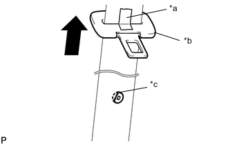
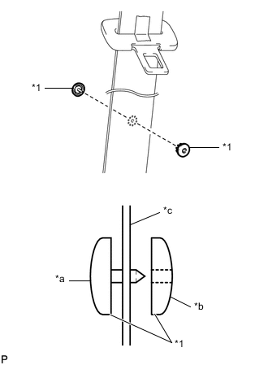
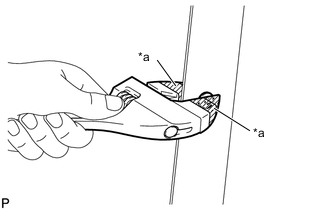
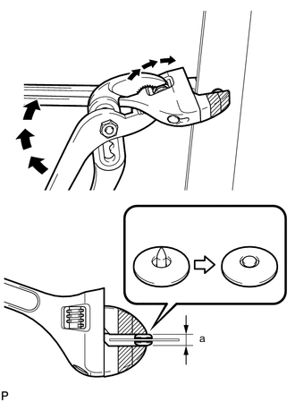
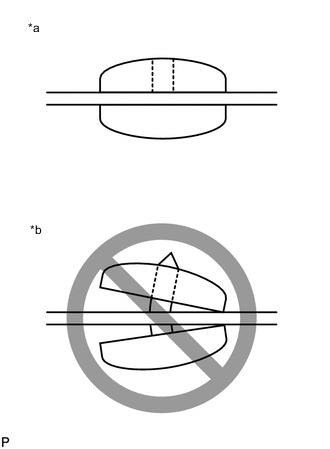

PROCEDURE
REMOVE TONGUE PLATE STOPPER

| *a | Adhesive Tape |
| *b | Tongue Plate |
| *c | Broken Tongue Plate Stopper |
Slide the tongue plate above the installation position of the tongue plate stopper, and temporarily hold it with adhesive tape.
Remove any pieces of the original tongue plate stopper in the belt webbing with a pair of pliers.
Note
Be careful not to damage the belt webbing during repair.
INSTALL TONGUE PLATE STOPPER

| *1 | Tongue Plate Stopper |
| *a | Male |
| *b | Female |
| *c | Belt Webbing |
Position a new tongue plate stopper in the hole of the belt webbing.
Tech Tips
Make sure that the installation direction of the tongue plate stopper is as shown in the illustration.

| *a | Protective Tape |
Hold the tongue plate stopper in the hole of the belt webbing using an adjustable wrench, and turn the adjustment screw of the adjustable wrench by hand to compress the tongue plate stopper.
Note
When using the adjustable wrench, make sure to position the male and female parts of the tongue plate stopper parallel to each other.
Do not use pliers to compress the pin of the tongue plate stopper. They may damage the tongue plate stopper and belt webbing.
Tech Tips
Tape the jaws of the adjustable wrench before use.

When the adjustment screw of the adjustable wrench can no longer be turned by hand, tighten the adjustment screw using a pair of adjustable joint pliers until the tongue plate stopper thickness is 4.5 to 5.0 mm (0.177 to 0.197 in.). (Refer to the illustrations.)
| Area | Measurement |
|---|---|
| a | 4.5 to 5.0 mm (0.177 to 0.197 in.) |

| *a | Correct |
| *b | Incorrect |
Make sure that the pin of male side of the tongue plate stopper has expanded evenly in the hole of the female part and is firmly held to the belt webbing. (Refer to the illustrations.)